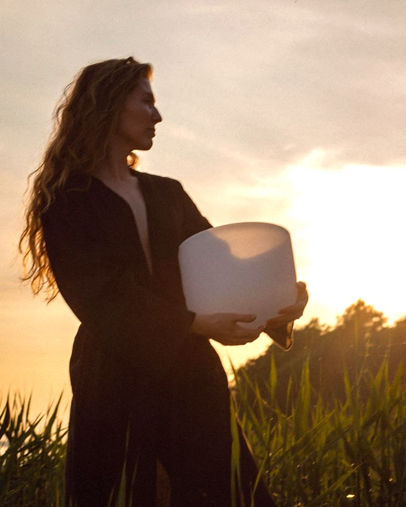
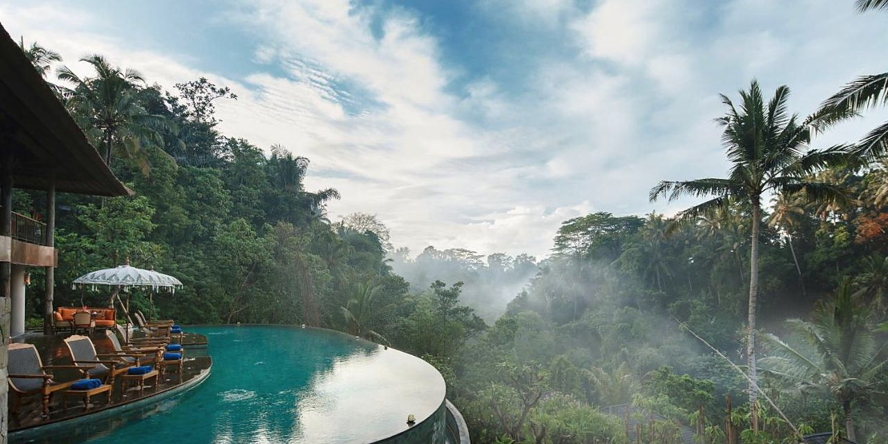
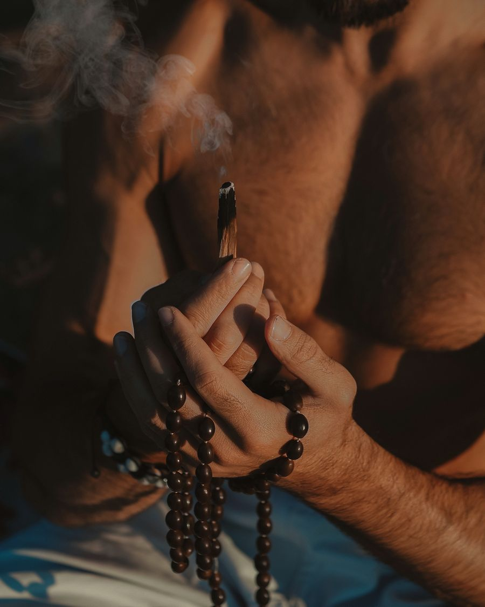
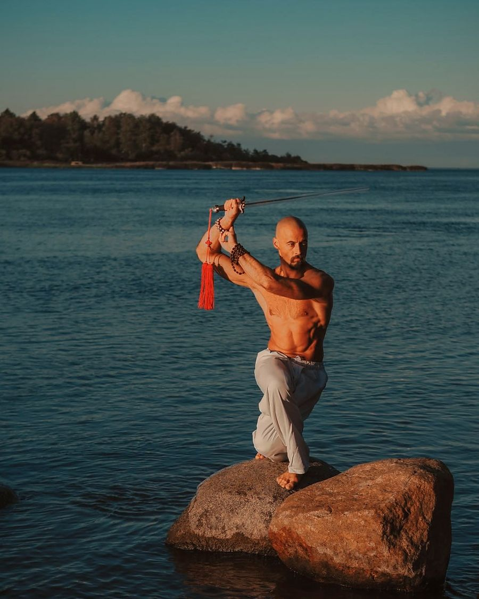
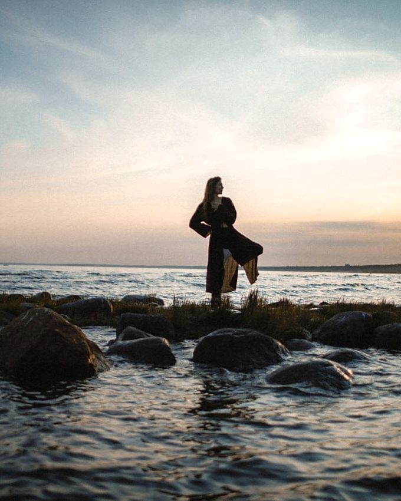
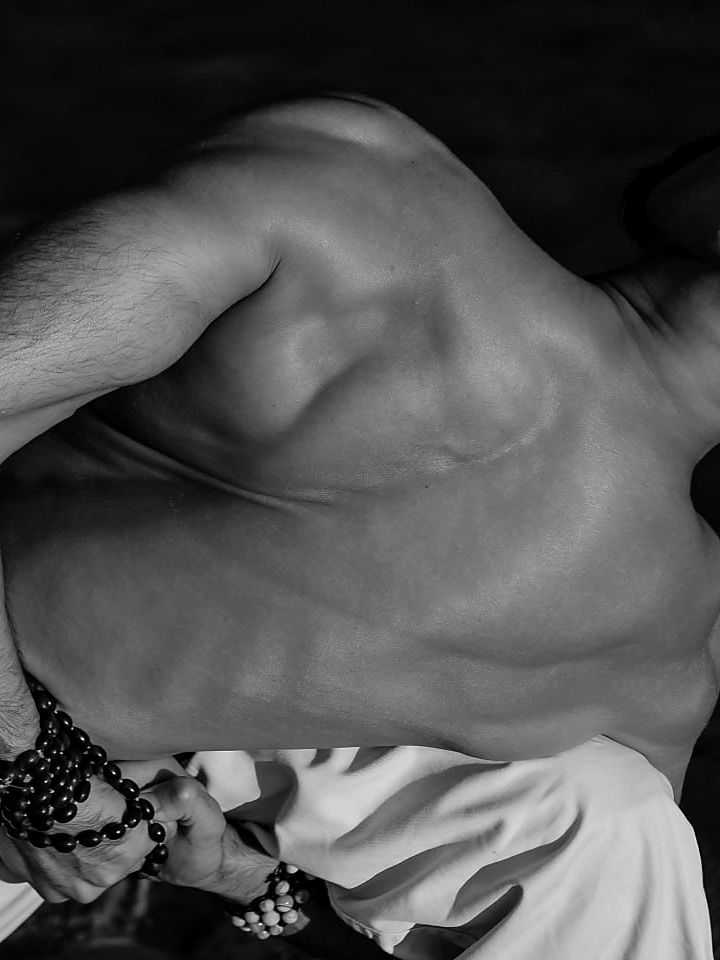
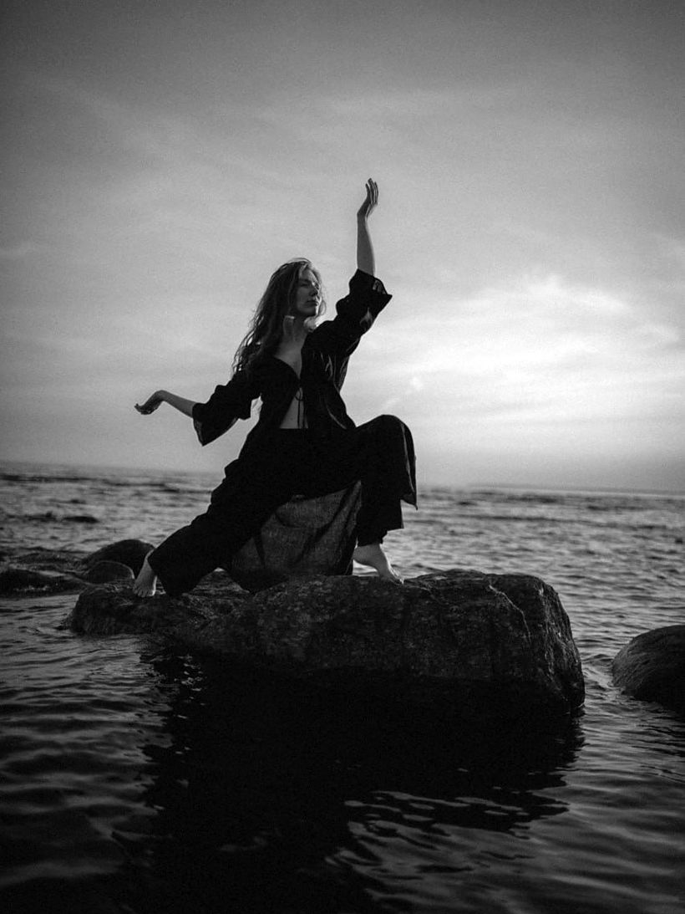
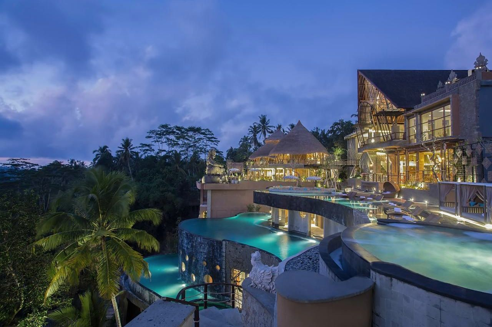
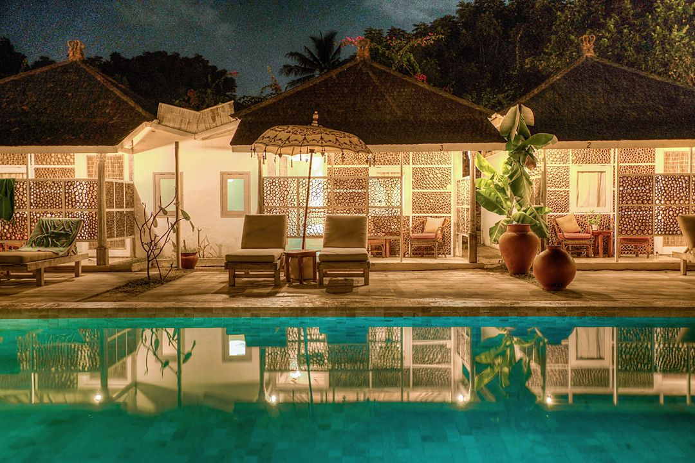
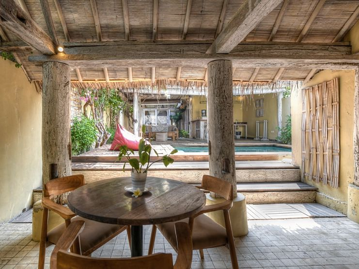

I2 ночи
Соль
Баланган и Улувату
Океан, горизонт и первые практики после перелёта. Восстановить сон и войти в общий ритм без спешки.
Между движением и звуком
Авторское путешествие-практика по Бали и Гили Мено


Одиннадцать дней, когда никуда не нужно спешить

Практика здесь встроена в маршрут. Утром — движение и дыхание. Днём — остров, вода, храмы и люди. Вечером — звук, йога-нидра и бережный контакт.
За одиннадцать дней меняется не только пейзаж, но и качество присутствия в нём.
Маршрут
I2 ночи
Баланган и Улувату
Океан, горизонт и первые практики после перелёта. Восстановить сон и войти в общий ритм без спешки.
II5 ночей
Убуд
Главная глава: цигун и йога, мелукат, рассвет на Батуре, горячие источники, Джатилувих и Батукару.
III2 ночи
Гили Мено
Остров без машин. Практики у воды, снорклинг с черепахами и добровольная цифровая пауза.
IV1 ночь
Санур
Практика на песке, финальный круг и общий ужин у моря перед дорогой домой.
Практики

Утро
Цигун, йога, мобильность, дыхание и биомеханика. Утренний блок готовит тело к дороге, подъёмам и воде.
Цигун · Йога · Мобильность · Дыхание · Даосский самомассаж

Вечер
Медитация, йога-нидра, поющие чаши и лаборатории парного взаимодействия — чтобы выйти из дневной нагрузки.
Поющие чаши · Йога-нидра · Медитация · Парная йога · Свободное движение
Баланган
Заземление, сон и возвращение в тело после перелёта.
Убуд
Основная глубина: две лаборатории контакта, работа с осью, восстановление после Батура.
Гили Мено
Практика у воды, баланс, звук на закате и цифровая пауза.
Санур
Практика на песке и интеграционный круг.
Ведущие

Движение и дыхание
Специализируется на реабилитации и биомеханике движения, преподаёт тайцзицюань и цигун. В программе отвечает за работу с осью тела, устойчивостью, мобильностью, дыханием и восстановлением после нагрузки.

Звук и восстановление
Преподаёт мягкие стили йоги и йога-нидру, проводит звуковые медитации с поющими чашами. В программе отвечает за вечернее замедление, практики отдыха и акустические погружения.
Лаборатории парного взаимодействия
Через движение и внимание участники исследуют контакт, личные границы, невербальное доверие и свободную импровизацию. Любое взаимодействие строится на добровольности и возможности выбрать комфортный уровень участия.



Организатор маршрута
20 лет организует путешествия и экспедиционные программы в Тибете, Патагонии, Японии, Индии и Китае. В этой поездке отвечает за логистику, размещение, связь с локальной командой, безопасность и форс-мажоры, чтобы участникам не приходилось решать организационные вопросы посреди маршрута.
Размещение
Вся группа живёт вместе. В Убуде и на Гили Мено — на виллах, где проходят и практики.
5 ночей · 14–19 февраля
Бутик-вилла над рисовыми полями, в стороне от шума центра. Бассейн с видом на долину, крытая беседка для практик, сад.



2 ночи · 19–21 февраля
Бунгало в кокосовой роще у белого песка. Бассейн двадцать метров, пространство для йоги, выход к воде.



2 ночи · 12–14 февраля
Первые ночи у океана на полуострове Букит: отдых после перелёта, пляж Баланган и закаты над Улувату.
1 ночь · 21–22 февраля
Последняя ночь на набережной Санура, в получасе от аэропорта. Общий ужин у моря.
Программа
Одиннадцать дней по главам. Нажмите на день, чтобы раскрыть его.
08:00–09:30
Утренний блок движения и дыхания
09:30–10:30
Завтрак
10:30–17:00
Выезды, океан, отдых, переезды и обед
17:30–20:00
Медитация, движение, лаборатории контакта или звук
После 20:00
Ужин, свободное время и отдых
Ритм подстраивается под погоду, море и переезды.
Встреча в аэропорту, трансфер на Баланган, заселение и отдых.
День
Встреча в аэропорту Денпасар, групповой трансфер на Баланган, заселение и отдых после перелёта.
Вечер
Знакомство группы, мягкая практика заземления и первое звуковое погружение в крытом пространстве.
Утренняя йога, океан, храм на утёсах и танец Kecak на закате.
Утро
Йога и дыхание у океана.
День
Океан и свободное время.
Закат
Храм Pura Luhur Uluwatu, прогулка по утёсам и танец Kecak.
Вечер
Свободное движение и медитация.
Цигун перед дорогой, переезд в Убуд и первая лаборатория контакта.
Утро
Цигун, мобильность и даосский самомассаж перед дорогой.
День
Переезд в Убуд, обед и отдых.
Вечер
Первая лаборатория контакта: границы и умение слышать себя рядом с другими.
Мелукат в Pura Mengening и ранний отдых перед Батуром.
Утро
Практика цигун.
День
Мелукат в Pura Mengening в сопровождении местного балийского священнослужителя. Мы идём в храм как гости: с подношением, в саронге и по правилам площадки.
Вечер
Йога-нидра под хрустальные чаши и ранний отдых перед Батуром.
Ночной выезд к вулкану, рассвет на вершине и горячие источники.
Ночь
Выезд к вулкану затемно.
Рассвет
Встреча рассвета на вершине во время пешего трекинга или поездка на джипах. Вариант вы выбираете заранее.
День
Горячие источники, обед и дневной сон.
Вечер
Дыхание и медитация для восстановления.
Мягкое утро после нагрузки, отдых, массажи и вечерний слот в Dragonfly Village.
Утро
Мягкое дыхание, йога и вытяжение после нагрузки.
День
Отдых, массажи и встреча-лекция о Бали.
Вечер
Закрытый групповой слот в Dragonfly Village: травяные бани и медленный вечер.
Джатилувих, система субак, храм Батукару и вторая лаборатория контакта.
Утро
Цигун и биомеханика движения.
День
Прогулка по рисовым террасам Джатилувих и знакомство с системой субак, культурный ландшафт которой включён в список UNESCO. Храм Pura Luhur Batukaru.
Вечер
Вторая лаборатория контакта и завершение убудского блока.
Трансфер в Padang Bai, спидбот на Гили Мено и звук у воды на закате.
Утро
Практика мобильности перед дорогой.
День
Трансфер в Padang Bai, спидбот на Гили Мено, заселение и отдых у океана.
Закат
Мягкое движение и звуковая медитация у воды или в крытом пространстве.
Снорклинг к подводным скульптурам и черепахам, затем добровольная цифровая пауза.
Утро
Йога, баланс и настройка тела.
День
Снорклинг к подводным скульптурам и местам встречи морских черепах. Две лодки с сопровождением.
После воды
Добровольная цифровая пауза. Телефон организатора остаётся включённым для экстренной связи.
Вечер
Парная практика йоги.
Практика на песке, спидбот обратно и финальный круг у моря.
Утро
Функциональная практика на песке у воды.
День
Спидбот обратно на Бали и трансфер в Санур.
Вечер
Короткий интеграционный круг и общий ужин у моря.
Неспешный завтрак, прогулка и групповые окна трансфера в аэропорт.
Утро
Неспешный завтрак и прогулка по берегу.
День
Групповые окна трансфера в аэропорт Денпасар.
Порядок практик и выездов подстраивается под погоду и состояние моря.
Условия участия
В маршруте есть ночной подъём на Батур, неровные тропы, лодочные переходы, ранние практики и высокая влажность. Для Батура предусмотрен отдельный вариант на джипах — его нужно выбрать заранее. До оплаты участник сообщает об ограничениях по здоровью, а окончательное решение об участии в отдельных активностях принимает с учётом рекомендаций врача и местной команды.
Парные практики и цифровая пауза строятся на согласии. Участник может остановиться, выбрать наблюдение или адаптированный вариант. На время цифровой паузы у организатора остаётся работающий телефон для экстренной связи.
12 февраля
Встречаем в аэропорту Денпасар (DPS) и везём на Баланган. Групповой трансфер входит в стоимость.
22 февраля
Групповые окна трансфера из Санура в аэропорт. Санур — в 30–40 минутах езды от терминала.
До и после
Если хотите прилететь раньше или остаться дольше, скажите в заявке — поможем с бронированием, это оплачивается отдельно.
Документы
Загранпаспорт со сроком действия не меньше полугода на дату въезда и страховка на весь период. Инструкцию по визе пришлём перед поездкой.
Стоимость
Стоимость и график оплаты присылаем в ответ на заявку вместе с полной программой и договором.
Вопросы
Нет. У каждой практики есть мягкий вариант, а ведущие работают с группой разного уровня. Напишите в заявке о своём опыте и о том, что беспокоит в теле, — Илья и Вита учтут это заранее.
Пеший подъём начинается ночью, тропа неровная, идти вверх примерно два часа. Нужна привычка к длительной ходьбе и устойчивость на спуске. Если это не ваш формат, есть вариант на джипах — его выбирают заранее.
Да. Пеший подъём и подъём на джипах различаются по времени, требованиям и стоимости, поэтому выбор подтверждается до поездки, а не утром на месте.
Живём всей группой в одних местах: в Убуде и на Гили Мено — на виллах, где проходят и практики. Базово — двухместные номера с раздельными кроватями, одноместное размещение — за доплату.
Питание по дням входит в программу, в день Батура предусмотрен ранний или упакованный приём пищи. Вегетарианские, веганские и безглютеновые запросы, а также аллергии мы собираем заранее и передаём отелям — напишите о них в анкете после первичного контакта.
Форма для практики, лёгкий дождевик, саронг и закрытые плечи для храма, купальник, солнцезащита без агрессивной химии для рифа, обувь с устойчивой подошвой для Батура и тёплый слой на ночной подъём. Полный список приходит после бронирования.
Перелёт вы берёте сами. 12 февраля встречаем в аэропорту Денпасар и везём на Баланган, 22 февраля отвозим в аэропорт из Санура. Если рейс неудобный — подскажем, как состыковаться.
Решение по лодкам и переездам принимает местная команда. Если море или погода не позволяют выйти, мы меняем порядок дня и переносим практику в защищённое пространство. Это заложено в маршрут заранее.
Нет. И то, и другое — по согласию. Можно остановиться в любой момент, выбрать наблюдение или адаптированный вариант. Телефон организатора во время цифровой паузы остаётся включённым.
Загранпаспорт, действующий не меньше полугода на дату въезда, и медицинская страховка на весь срок. Виза оформляется по прилёте или онлайн — перед поездкой пришлём актуальную инструкцию.
Место бронируется предоплатой, остаток вносится до поездки. Место можно передать другому человеку. Суммы, сроки и условия возврата — в договоре, который мы присылаем вместе с программой.
Заявка
Заявка ни к чему не обязывает. Мы свяжемся, ответим на вопросы и пришлём программу, стоимость и договор.